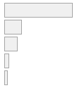
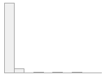
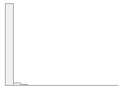
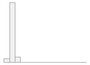
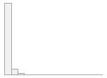
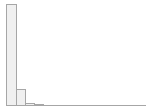
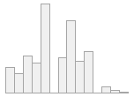
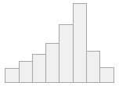

5.2 Variables
5.2.1 Variables Dependientes
Como se puede apreciar en la Tabla 5.1, las variables dependientes del estudio corresponden a la distinción que se ha hecho en la literatura respecto a los fines de la violencia: por el cambio social y por el control social. Se utilizarán tres indicadores que buscan representar los conceptos, dos para la violencia por el control social y uno para la violencia por el cambio. Los indicadores señalados en la Tabla 5.1 responden a la pregunta ¿En qué medida cree usted que se justifican o no se justifican las siguientes situaciones?. Los indicadores de violencia por el control se centran en la fuerza ejercida por carabineros, en contraste, los indicadores de la violencia por el cambio consisten en la violencia como táctica de protesta, específicamente, lanzar piedras a carabineros. Todos los indicadores están medidos con una escala Likert de cinco categorías, que van desde la aseveración de que la violencia nunca se justifica, hasta que siempre se justifica. En síntesis, se utilizarán tres variables dependientes en el estudio, dos para medir la justificación de la violencia por el control social y una para medir la justificación de la violencia por el cambio social.
| Concept | Indicator | Stats / Values | Freqs (% of Valid) | Graph |
|---|---|---|---|---|
| Violencia Cambio Social | Que estudiantes tiren piedras a Carabineros en una marcha por la educación del país | 1. Nunca 2. Pocas veces 3. Algunas veces 4. Muchas veces 5. Siempre |
506 (71.2%) 89 (12.5%) 74 (10.4%) 25 ( 3.5%) 17 ( 2.4%) |
|
| Violencia Control Social | Que Carabineros use la fuerza para reprimir una manifestación pacifica | 1. Nunca 2. Pocas veces 3. Algunas veces 4. Muchas veces 5. Siempre |
554 (77.9%) 77 (10.8%) 54 ( 7.6%) 22 ( 3.1%) 4 ( 0.6%) |
|
| Violencia Control Social | Que Carabineros desaloje a la fuerza a los estudiantes de un liceo en toma | 1. Nunca 2. Pocas veces 3. Algunas veces 4. Muchas veces 5. Siempre |
457 (64.3%) 117 (16.5%) 87 (12.2%) 30 ( 4.2%) 20 ( 2.8%) |
 |
5.2.2 Variables Independientes
El sentido de injusticia se mide en base a la Evaluación de Justicia (\(J\)) propuesta por Jasso (1980). La evaluación de justicia consiste en el logaritmo natural de la proporción entre la recompensa existente y la recompensa justa (ver Ecuación (3.1)). Estas evaluaciones pueden ser reflexivas (e.g. cuando un observador evalúa la justicia de sus ingresos) o pueden ser no reflexivas (e.g. cuando un observador evalúa la justicia en los ingresos de otra persona). En este estudio se incorporarán ambos tipos de evaluaciones. Por un lado, está la evaluación del observador respecto a sus propios ingresos (ver Ecuación (5.3)). Esta variable se construye a partir de dos indicadores: los ingresos que recibe el entrevistado y los ingresos que considera que sería justo que recibiera (ver Tabla 5.2). Por otro lado, están las evaluaciones del observador respecto a los ingresos de un obrero no calificado (ver Ecuación (5.2)) y un gerente de una gran empresa (ver Ecuación (5.1)). Ambas variables se construyen preguntándole a los entrevistados cuánto creen que gana y cuánto debería ganar cada ocupación (ver Tabla 5.2). Los valores de \(J\) se leen de la siguiente manera: valores negativos representan una situación de injusticia por subrecompensa, valores iguales a 0 representan una situación de justicia perfecta y valores positivos representan una situación de injusticia por sobrerecompensa. En una suma, el presente estudio cuenta con tres variables independientes de hipótesis: las evaluaciones de justicia del entrevistado (\(J_{entrevistado}\)), las evaluaciones de justicia para un obrero no calificado (\(J_{obrero}\)) y las evaluaciones de justicia para un gerente de una gran empresa (\(J_{gerente}\)).
| Indicator | Stats / Values | Freqs (% of Valid) | Graph |
|---|---|---|---|
| Ingresos Percibidos Gerente | Mean (sd) : 28686498 (59644893) min < med < max: 1e+05 < 1.2e+07 < 5e+08 IQR (CV) : 1.9e+07 (2.1) |
63 distinct values |  |
| Ingresos Justos Gerente | Mean (sd) : 7948706 (18498008) min < med < max: 2e+05 < 5e+06 < 3e+08 IQR (CV) : 6e+06 (2.3) |
45 distinct values |  |
| Ingresos Percibidos Obrero | Mean (sd) : 326258.8 (128889.4) min < med < max: 80000 < 3e+05 < 3e+06 IQR (CV) : 50000 (0.4) |
47 distinct values |  |
| Ingresos Justos Obrero | Mean (sd) : 672133.6 (749299) min < med < max: 50000 < 550000 < 1.5e+07 IQR (CV) : 2e+05 (1.1) |
36 distinct values | |
| Ingresos Entrevistado | Mean (sd) : 555370.7 (736515.4) min < med < max: 20000 < 4e+05 < 1.5e+07 IQR (CV) : 340000 (1.3) |
114 distinct values |  |
| Ingresos Justos Entrevistado | Mean (sd) : 826542.9 (870708.1) min < med < max: 20000 < 6e+05 < 1.5e+07 IQR (CV) : 5e+05 (1.1) |
66 distinct values |  |
\[\begin{equation} J_{gerente}=ln(\frac{\text{Ingresos Percibidos}}{\text{Ingresos Justos}}) \tag{5.1} \end{equation}\]
\[\begin{equation} J_{obrero}=ln(\frac{\text{Ingresos Percibidos}}{\text{Ingresos Justos}}) \tag{5.2} \end{equation}\]
\[\begin{equation} J_{entrevistado}=ln(\frac{\text{Ingresos Reales}}{\text{Ingresos Justos}}) \tag{5.3} \end{equation}\]
A fin de facilitar la interpretación de las variables independientes, se efectúa un proceso de recodificación para que las tres variables compartan una escala común. Siguiendo los trabajos previos que han utilizado esta variable (Resh & Sabbagh, 2017; Sabbagh & Resh, 2018), se multiplican por -1 las evaluaciones de justicia para el entrevistado (ver Ecuación (5.4)) y para el obrero (ver Ecuación (5.5)). Esta recodificación permite interpretar todos los valores de la misma manera, donde a mayor valor en el indicador, más injusticia representa. La única diferencia es que, en el caso de la evaluación de injusticia del gerente, esta injusticia se debe a la sobrerecompensa, en cambio, en las evaluaciones para el entrevistado y el obrero, la injusticia se debe a la subrecompensa. En síntesis, las variables que se analizarán son: \(J_{gerente}\), \(J'_{obrero}\) y \(J'_{entrevistado}\), donde a mayor valor de \(J\), mayor es la injusticia que se evalúa.
\[\begin{equation} J'_{entrevistado}=J_{entrevistado}*-1 \tag{5.4} \end{equation}\]
\[\begin{equation} J'_{obrero}=J_{obrero}*-1 \tag{5.5} \end{equation}\]
5.2.3 Variables de Control
La Tabla 5.3 muestra las variables de control por literatura, las cuales consisten en aquellas que han mostrado ser un factor determinantes de las justificaciones de violencia. En detalle, estas variables son: pertenencia a grupos desaventajados, ideología y percepciones de justicia procesal. Los indicadores que se incluirán para medir la pertenencia a grupos desaventajados son: ingresos, nivel educacional, satisfacción con los ingresos, genero y pertenencia a pueblo Mapuche. Aquí se considerará que a menores ingresos, menor nivel educacional, menor satisfacción con los ingresos, mujeres y quienes pertenecen al pueblo Mapuche son quienes pertenecen a grupos más desaventajados. En el caso de la ideología, se incluyen versiones recortadas de las escalas de SDO y RWA. Para las percepciones de justicia procesal, se incluyen dos indicadores que responden a la pregunta: ¿Con cuánta frecuencia diría usted que personas de [grupo o clase social mencionado por el entrevistado] son tratadas con respeto…? desde servicios de salud y por parte de carabineros. A mayor frecuencia, mayor es la percepción de trato justo.
La mayoría de las variables de control se utilizarán en su nivel de medición original, a excepción de tres. Primero, se calcularon dos indices a partir de los indicadores de ideología: uno para medir SDO y otro para medir RWA. Ambos indices tienen como valor mínimo 0 y valor máximo 1, donde a mayor valor mayor es la presencia de ideología SDO o RWA. Segundo, el nivel educacional fue recodificado en base a categorías CINE 2011 (UNESCO, 2013). Tercero, la pertenencia a pueblos indígenas fue recodfificada a (1) No pertenece a ningún pueblo, (2) Pertenece a otro pueblo - (3) Pertenece a pueblo Mapuche, tal y como se observa en la Tabla 5.3.
| Concept | Indicator | Stats / Values | Freqs (% of Valid) | Graph |
|---|---|---|---|---|
| Grupo Desaventajado | Ingresos Entrevistado | Mean (sd) : 555370.7 (736515.4) min < med < max: 20000 < 4e+05 < 1.5e+07 IQR (CV) : 340000 (1.3) |
114 distinct values | |
| Grupo Desaventajado | Sexo | 1. Hombre 2. Mujer |
333 (46.8%) 378 (53.2%) |
|
| Grupo Desaventajado | Nivel Educacional CINE 11 | 1. Primaria incompleta menos 2. Primaria y secundaria baj 3. Secundaria alta 4. Terciaria ciclo corto 5. Terciaria y Postgrado |
60 ( 8.4%) 48 ( 6.8%) 302 (42.5%) 135 (19.0%) 166 (23.3%) |
|
| Grupo Desaventajado | Satisfaccion Ingresos | 1. Totalmente satisfecho 2. Satisfecho 3. Ni satisfecho ni insatisf 4. Insatisfecho 5. Totalmente insatisfecho |
21 ( 3.0%) 170 (23.9%) 109 (15.3%) 337 (47.4%) 74 (10.4%) |
|
| Grupo Desaventajado | Pertenencia a Pueblo Indigena | 1. Ninguno 2. Otro pueblo 3. Mapuche |
625 (87.9%) 24 ( 3.4%) 62 ( 8.7%) |
|
| Ideologia | SDO Indice | Mean (sd) : 0.5 (0.1) min < med < max: 0.2 < 0.5 < 0.9 IQR (CV) : 0.2 (0.3) |
12 distinct values |  |
| Ideologia | RWA Indice | Mean (sd) : 0.7 (0.2) min < med < max: 0.2 < 0.7 < 1 IQR (CV) : 0.2 (0.3) |
17 distinct values |  |
| Trato Justo | Trato Respetuoso Salud | 1. Nunca 2. Casi nunca 3. A veces 4. Casi siempre 5. Siempre |
75 (10.5%) 130 (18.3%) 298 (41.9%) 153 (21.5%) 55 ( 7.7%) |
|
| Trato Justo | Trato Respetuoso Carabineros | 1. Nunca 2. Casi nunca 3. A veces 4. Casi siempre 5. Siempre |
108 (15.2%) 138 (19.4%) 254 (35.7%) 129 (18.1%) 82 (11.5%) |